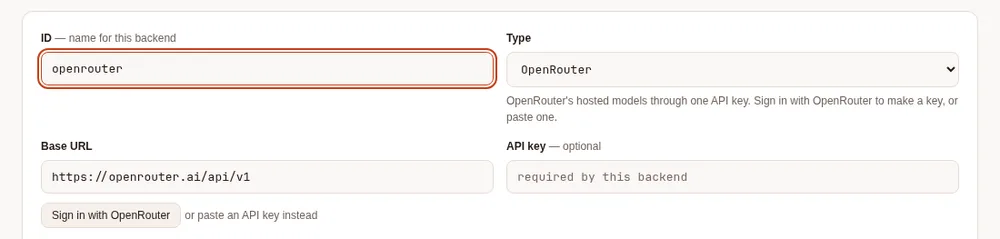
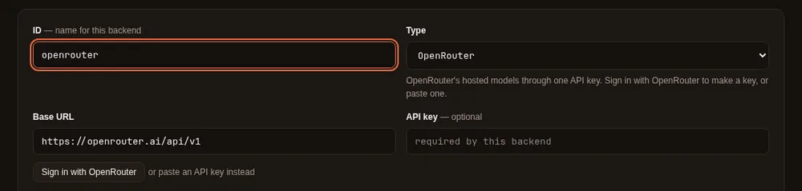
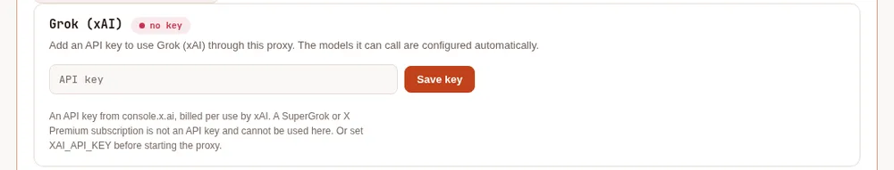
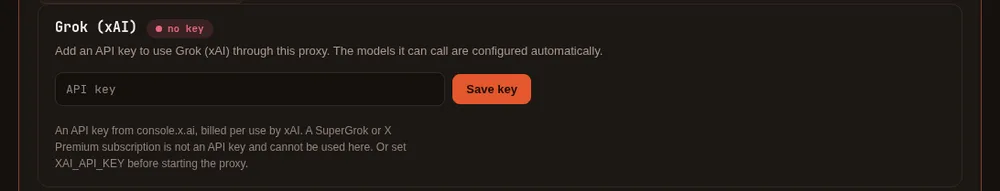
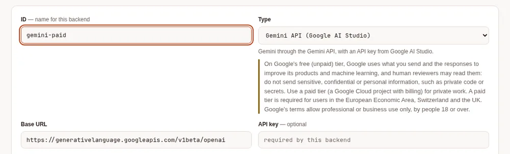
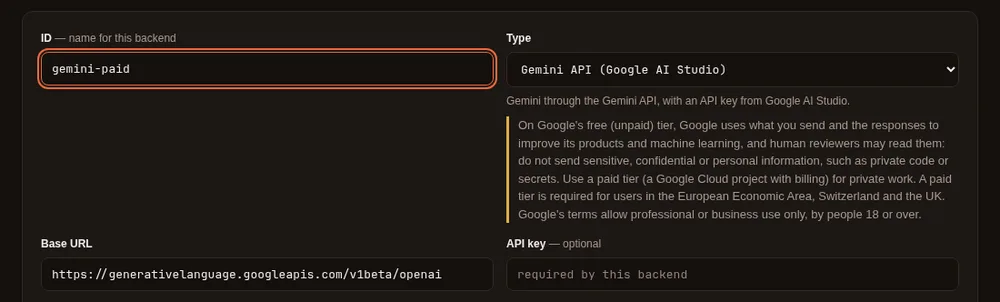
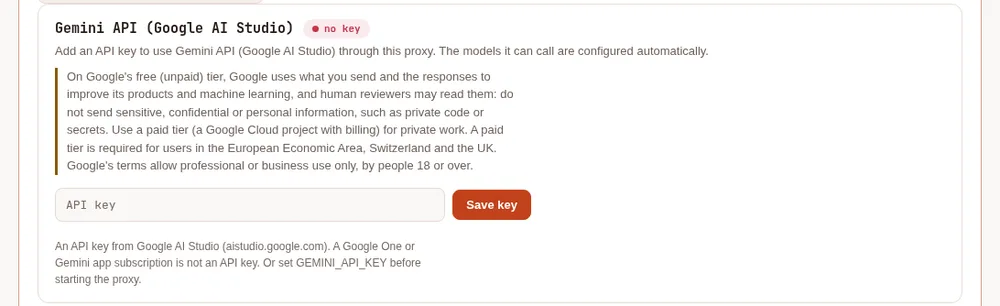
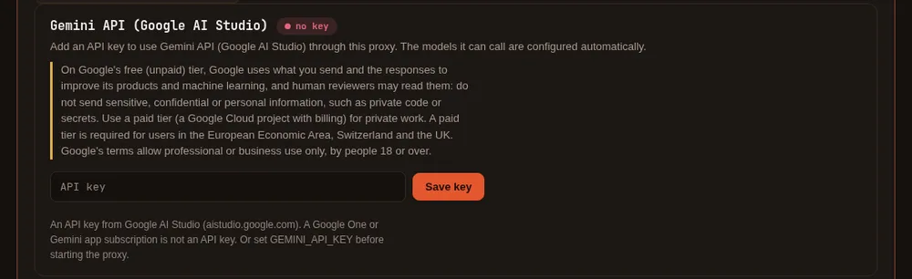

Sign in #
On this page
You can sign in from the terminal or from the proxy's setup page at http://127.0.0.1:11539. Either way,
the proxy holds the credential and the agent only asks it for models. Signing in again refreshes the same
account — the models it can use, its plan, its allowance — rather than adding another.
maple-harness auth login github-copilot # a browser sign-in
maple-harness auth login claude # an Anthropic API key
maple-harness auth logout claude
maple-proxy auth status # what is signed inThis page is about signing the proxy in to model providers. On a proxy several people share, each person signs in to the proxy with an access token of their own: see How each person signs in.
GitHub Copilot #
maple-harness auth login github-copilotThe command prints a code and a link. Open the link, enter the code, and approve. The agent then asks Copilot which models your plan allows and configures exactly those.
- Free plan. It works, including Copilot's auto mode. The setup page shows how many chats you have left and when they reset, and the status bar in the agent shows the same.
- Copilot Auto. When your account offers it, the model list also has
github-copilot/auto, where Copilot picks the model for each request. See Copilot Auto. - Paid and organisation plans. The page and the status bar show your plan's allowance where Copilot reports one.
- No models listed. Some accounts have no chat models enabled. Enable them in your Copilot settings on GitHub, then sign in again.
Claude (Anthropic API key) #
maple-harness auth login claudeIt asks for an API key (typed hidden), checks it with Anthropic, and configures the models that key can call. You can also paste it into the Anthropic (Claude) card on the setup page. Create a key in the Claude Console. An account with no credit will sign in but its requests will fail with a "credit balance too low" message until you add credit.
The key is checked when you add it. Pasting it on the setup page or running auth login asks Anthropic
for the key's model list, which spends no tokens. A key that is not valid, has expired, was disabled or
deleted, or may not use the API in its workspace is refused with a message that says which, and nothing is
stored. A key that changes in config.yaml (or through the setup page's provider form) while the proxy runs
is checked the same way once; if Anthropic refuses it, the proxy's log and the account card say so. No key
is ever written to a log.
Use an ordinary API key, limited to one workspace. A proxy only sends model requests, so it should hold the least access that does that:
- An Admin API key (
sk-ant-admin...) manages your whole organization and is refused when you add it. One that is already in your configuration keeps working, but the account card andmaple-harness doctorflag it until you replace it. - A key not limited to one workspace (a personal or service-account key made for several workspaces)
must name the workspace each request runs in. Signing in with one asks you to choose: the setup page lists
the workspaces the key can see, and on the command line run
maple-proxy auth login anthropic --workspace wrkspc_...(signing in without--workspacelists them). The chosen workspace is saved with the provider asworkspace_idand sent with every request. A key limited to one workspace is safer, and the account card says so while you use the other kind.
Not a Claude subscription. A claude.ai or Claude Code sign-in (Free, Pro, Max, Team or Enterprise) is not an API key. Anthropic's terms don't allow other tools to use a Claude.ai subscription sign-in, so Maple never takes one: if you paste one by mistake it is refused, and one found in your configuration is never sent. What to use instead:
- An API key, billed per token. Since October 2026, Claude Max and Team plans include monthly API credits in a linked Claude Console organization, and an ordinary API key from that organization uses them. See Anthropic's API credits for Max and Team plans.
- Claude through your own cloud account (Amazon Bedrock, Google Vertex AI or Microsoft Azure), where Maple supports it.
An API key has no fixed seat or subscription cap the way a Copilot seat does, so a second key on a different Console account (its own spend limit, its own rate limit) is a plain, ordinary thing to add as a fallback; see more than one account below.
What the account card shows. After the first request (or the sign-in), the card shows the organization
and workspace ids Anthropic reports for the key, and, from the rate-limit figures Anthropic sends with every
reply, how many requests and input and output tokens per minute are left for each model you used. Nothing is
asked of Anthropic for these. A model with a tenth or less of a limit left shows "near Anthropic's rate
limit" on the Health card, and with alerts.quota_fractions set (see
Alerts and forecasts) it also raises a quota alert. Figures older than an hour are
not shown.
OpenRouter #
OpenRouter can make a key for you when you sign in with your OpenRouter account. Nothing about OpenRouter appears until you choose it.
On the setup page, click Add provider, choose OpenRouter as the type, and click Sign in with OpenRouter. Approve in the OpenRouter tab that opens. Back on the setup page, the provider is saved with its new key, and Detect models lists the models it can use: keep the ones you want and click Save.


From a terminal:
maple-proxy auth openrouter # opens your browser, then waits for OpenRouter
maple-proxy auth openrouter --no-browser # prints the link instead of opening it
maple-proxy auth openrouter --headless # no browser on this machine: paste the code OpenRouter shows
maple-proxy auth openrouter --as work # a second OpenRouter account, with its own nameOr from the harness, which asks your proxy to do the same (the proxy keeps the key; the harness never sees it):
maple-harness auth login openrouter # opens your browser, then waits for the proxy
maple-harness auth login openrouter --no-browser # prints the link instead of opening it
maple-harness auth login openrouter --headless # no browser on this machine: paste the code OpenRouter shows
maple-harness auth login openrouter --id openrouter-work # write a second OpenRouter provider under this idOpenRouter sends your browser back to the proxy's machine, so without --headless open the link on that machine.
When the harness uses a proxy on another machine, sign in there instead (maple-proxy auth openrouter or the
setup page): maple-harness auth says so.
Then pick its models on the setup page (Detect models), or list them under the provider in the configuration.
- The key is yours. OpenRouter creates it under your account, labelled "Maple Harness". You can set a limit on it or revoke it on OpenRouter's keys page, and you use it under OpenRouter's own terms.
- It is kept like any other key: in the keyring, with only a reference in the configuration. Maple never shows it.
- Pasting a key still works. Type an OpenRouter key into the provider's API key field instead of signing in; a provider you already set up with a key keeps working as it is.
- The sign-in waits ten minutes for you to approve, the same time OpenRouter's code is valid.
Grok (xAI API key) #
maple-harness auth login xai # "grok" works tooIt asks for an API key (typed hidden), checks it with xAI, and configures the chat models that key can call, with their context windows. Create a key in the xAI Console. Nothing about Grok appears on the setup page until you choose it: to add it there, open Settings, click + Add provider, choose Grok (xAI) as the type, paste the key, click Detect models, keep the ones you want and Save. Once signed in, Grok has an account card like Claude's.


- The key is checked when you add it. Asking xAI for the key's model list spends no tokens. A key xAI refuses is not stored. A key that is plainly another vendor's (Anthropic, OpenRouter, Google) is refused before it is sent anywhere.
- What it costs. xAI states the price of every reply. Maple records that figure as the request's cost in
dollars (shown where dollar costs are shown, such as
/cost, the usage log and the Costs tab, which label dollar figures as estimated; for Grok it is the price xAI's reply stated). Tokens spent reasoning count as output, as xAI bills them. - When the money runs out. A team out of credits, or at its monthly spending limit, is treated as an account with nothing left: the proxy moves to the next account in �0�, or to a model fallback, mid-task. A rate limit is waited out or sent to a fallback the same way.
- Not a SuperGrok or X Premium subscription. xAI lets only the tools it has registered sign in with a subscription, and Maple is not one of them yet, so Maple takes an API key only. A shared proxy never uses anyone's Grok subscription.
- On a shared proxy (a hub), use a key from your organisation's xAI team. xAI's terms let your organisation's own staff use it; serving people outside your organisation needs your own terms with them, which Maple cannot check for you.
Gemini API (Google AI Studio key) #
Read this first. On Google's free (unpaid) tier, Google uses what you send and the responses to improve its products and machine learning, and human reviewers may read, annotate and process them. Do not send sensitive, confidential or personal information there, which for a coding agent includes private code and secrets. Use a paid tier (a Google Cloud project with billing turned on) for private work. Users in the European Economic Area, Switzerland and the UK must use a paid tier. Google's terms allow the Gemini API for professional or business use only, by people 18 or over. See Google's Gemini API Additional Terms.
maple-harness auth login geminiIt asks for an API key (typed hidden), checks it with Google, and configures the chat models that key can call, with their context windows. Create a key in Google AI Studio. As with Grok, nothing about Gemini appears on the setup page until you choose it: Settings, + Add provider, type Gemini API (Google AI Studio), then the key, Detect models and Save. The notice above stays on Gemini's card and on its provider for as long as they are there.




- It uses Google's OpenAI-compatible endpoint for the Gemini API, which Google documents as still in beta. Streaming, tool calls and images go through it.
- What it costs. Google's replies state no price, so Maple records the tokens only (thinking tokens count as output, as Google bills them); look at your Google Cloud billing for the money.
- Limits. A per-minute limit is treated as a rate limit (waited out, or sent to a fallback). A model's daily quota used up is reported as that, for that model only, so the key's other models keep answering. A model your tier does not include says so instead of failing as a bad request.
- Tool calls on Gemini 3 must send back a signature Google attaches to each call. The proxy keeps them and puts them back for you. If the proxy restarts in the middle of a task, the next step goes with the placeholder Google documents for that case, which Google accepts.
- On a shared proxy (a hub): for your own organisation's people only. Google's API terms do not allow offering the Gemini API to anyone outside your organisation, and Maple cannot check who is asking. The notice above applies to everyone who uses it: use a paid tier.
Azure and Google Cloud #
Azure OpenAI, Microsoft Foundry and Google's Vertex AI sign in with your cloud identity (az login, gcloud, or a
pod's workload identity) or an Azure API key: see Azure and Google Cloud.
Amazon Bedrock #
Bedrock signs in with your AWS credentials (a profile, aws sso login, or an IAM role on EC2, ECS or EKS); Maple stores
no AWS key: see Amazon Bedrock.
More than one account #
Add a second (or third) account of the same provider — another GitHub Copilot seat, another Anthropic API key — and give it a name, so you can tell it apart from the others. A name can be used by one account only, across all providers, and cannot be a provider's id:
maple-harness auth login github-copilot --as work
maple-harness auth login claude --as personalOn the setup page, each provider's card shows "+ Add another account" once you have signed in to the first one. The account you already had keeps working exactly as before and is shown by its provider id until you give it a name — renaming never touches its models or its credential, only its label:
maple-proxy secrets rename github-copilot "main account"A second account gets its own provider id, made from the provider and the name: --as work on GitHub Copilot
gives github-copilot-work. With more than one account configured, list the next account under the first one in
�2�: if the one in use runs out of quota or credit, or is refused,
the proxy tries the next one on its own, mid-task. When two accounts serve a model with the same name, a plain name
goes to the last of them in the configuration (the proxy's log says which), and <provider id>/<model> (for example
github-copilot-work/gpt-5) reaches one account's copy anywhere a model name is used.
Where the credentials are kept #
Keys and sign-ins go in your operating system's keyring (Keychain on macOS, the Secret Service on Linux).
The configuration file holds only a reference such as ${secret:anthropic-key}, never the key, so it is
safe to paste into an issue. Without a keyring they fall back to a private file, and the proxy tells you.
maple-proxy secrets status shows where each one is stored, never its value.
Next: choose a model, or connect a local model server.